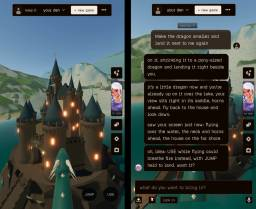

Simon Willison's Weblog
フィード

dbreunig/nesformer
Simon Willison's Weblog
<p><strong><a href="https://github.com/dbreunig/nesformer">dbreunig/nesformer</a></strong></p>Inspired by <a href="https://divagr.com/blog/qwenputer">qwenputer</a> by Divyansh Agrawal, Drew Breunig baked a working emulator for a Nintendo Entertainment System 6502 CPU into the weights of Qwen3.5-4B. You can now play NES ROMs such as Super Mario Bros (very slowly) running inside Qwen!</p><p>In <a href="https://news.ycombinator.com/item?id=50306442#50307402">a comment on Hacker News</a> Drew reveals the Opus 5.5 prompts he used to build this system:</p><blockquote><p><code>Read this article and any relevant source code: https://divagr.com/blog/qwenputer. Then explore if you could emulate the chip and ram in a Nintendo Entertainment System (as people do today with FPGAs in MISTRs) using this technique. If so, what size model would you have to build and if you could use smaller faster ones, could you get it to be at the standard clockspeed.</code></p></blockquote><p>Followed by:</p><blockq
15時間前
API credits benefit for eligible ChatGPT subscriptions
Simon Willison's Weblog
<p><strong><a href="https://help.openai.com/en/articles/20001626-api-credits-benefit-for-eligible-chatgpt-subscriptions">API credits benefit for eligible ChatGPT subscriptions</a></strong></p>Earlier this month Anthropic <a href="https://simonwillison.net/2026/Oct/7/claude-haiku-5-5/#api-credits">announced a generous new benefit</a> for their Max and Team subscriptions: $100, $200, and $500 per month subscribers would get the equivalent quantity of (expiring) credits to use with the Anthropic API.</p><p>OpenAI have now launched pretty much exactly the same deal: if you have a $100, $200, or $500 subscription plan with them you now get that same quantity of credits to apply to one of your API organizations.</p><p>I maintain subscriptions with both companies, so this is great news for me! I may even ship some public-facing demos now that the credits are already covered by my existing subscriptions. <p>Tags: <a href="https://simonwillison.net/tags/ai">ai</a>, <a href="https://simonwillis
2日前

Building a multiplayer game world with autonomous Fable-class models
Simon Willison's Weblog
<p><strong><a href="https://twitter.com/jsnnsa/status/2115623382721126826">How I Built the Most AI-Pilled Company in the World</a></strong></p>Don't be put off by the clickbait headline, this piece by Jacob Sansbury describing how they are building <a href="https://spawn.co">Spawn</a> is a fascinating exploration of the bleeding edge of what's possible with agentic engineering against frontier models.</p><p>Spawn is a massively multiplayer gaming environment where players can use prompts (to the in-game agent, Savi) to modify the game world.</p><p>I fired it up on my phone for a few minutes and was able to prompt a castle into existence, then a dragon, then ride the dragon to fly around that castle.</p><p><img alt="Two mobile screenshots side by side from a 3D voxel-style game. Left: a first-person view from the saddle of a small teal dragon, its neck with pale diamond markings and two curved white horns in the foreground, flying toward a dark stone castle with tall teal-gray conical
2日前
Quoting Ben Hylak
Simon Willison's Weblog
<blockquote cite="https://twitter.com/benhylak/status/2115172657910120740"><p>every product i use should just be a headless mcp, that feeds into an agent, where i never have to think about anything underneath.</p><p>except for our product, of course. </p><p>in our product, customers love the ui and love us very much.</p><p>we're special that way.</p></blockquote><p class="cite">— <a href="https://twitter.com/benhylak/status/2115172657910120740">Ben Hylak</a></p> <p>Tags: <a href="https://simonwillison.net/tags/model-context-protocol">model-context-protocol</a>, <a href="https://simonwillison.net/tags/ai">ai</a></p>
2日前
Quoting Ted Sanders
Simon Willison's Weblog
<blockquote cite="https://news.ycombinator.com/item?id=50248124#50249160"><p>In general, LLM performance is incredibly multidimensional. There's no guarantee of a fixed ordering where the model that is best at math is also the model that's best at jokes. Despite that complexity, much of the variation in performance is explained by just a single variable: model size. In general, models that are bigger will (a) be more performant / reliable, (b) cost more per token, and (c) have better recall of esoteric facts. As you note, our models are ordered:</p><p>Luna < Terra < Sol < Astra</p><p>[<a href="https://news.ycombinator.com/item?id=50248124#50250804">...</a>] These days, version number signifies a few things at once: the order of release, the relationship to other releases, and the magnitude of improvement. So something like 6.1 would indicate it was launched after 5.6, may share some similarities to other 6.1 models in terms of training data / personality (which is why it's no
3日前
GitHub Octoverse 2026
Simon Willison's Weblog
<p><strong><a href="https://github.blog/news-insights/octoverse/octoverse-commits-pushes-reach-new-highs-in-2026-as-developers-build-with-agents/">GitHub Octoverse 2026</a></strong></p>I'm at GitHub Universe today (GitHub gave me a free ticket through their "GitHub Stars" program). EVP Jay Parikh just announced this year's Octoverse report, and highlighted these numbers in particular:</p><p><img alt="Photo of a conference keynote stage: a wide curved screen shows three line charts side by side, with a speaker in a black sweater and dark jeans standing at its right edge beneath an overhead lighting rig. Each chart has a large colored headline number above it and a shaded line that runs low and nearly flat across the left side, then curves sharply upward on the right to end in a dot at its peak. Left, in green: "220M" "Merged PRs per month", y-axis 0M, 50M, 100M, 150M, 200M. Middle, in magenta: "7.38B" "Commits per month", y-axis 0B, 2B, 4B, 6B, w
3日前
The October inflection point for vibe game development 1
1
Simon Willison's Weblog
<p>I've written before about how November 2025 was <a href="https://simonwillison.net/tags/november-2025-inflection/">an inflection point for coding agents</a> - the point where Opus 4.5 and GPT-5.1 crossed a tipping point that meant their respective coding agents became reliable daily drivers for software engineers. I think we've reached a new inflection point in October 2026, and this time it's for <strong>vibe coding computer games</strong>.</p><ul> <li><a href="https://simonwillison.net/2026/Oct/28/vibe-game-development/#tree-appreciator">Tree Appreciator</a></li> <li><a href="https://simonwillison.net/2026/Oct/28/vibe-game-development/#emberwick">Emberwick</a></li> <li><a href="https://simonwillison.net/2026/Oct/28/vibe-game-development/#battle-drones">Battle Drones</a></li> <li><a href="https://simonwillison.net/2026/Oct/28/vibe-game-development/#pumpkin-farmer-aka-quarter-sun-cove">Pumpkin Farmer, aka Quarter Sun Cove</a></li> <li><a href="https://simonwillison.net/2026/Oct/28/
3日前
Quoting Terk Terkowitz
Simon Willison's Weblog
<blockquote cite="https://www.aboutamazon.com/news/company-news/amazon-software-engineer-role-guideline-ai"><p>If your work does not benefit from current AI tooling, that is a finding, not a failing. Document why, share it with your community of peers, bring it to your manager, and work to find solutions. An engineer who can explain where AI does not yet help their work is demonstrating the judgement we are asking for.</p></blockquote><p class="cite">— <a href="https://www.aboutamazon.com/news/company-news/amazon-software-engineer-role-guideline-ai">Terk Terkowitz</a>, An update from Amazon engineering leadership on the role of the developer in the age of AI</p> <p>Tags: <a href="https://simonwillison.net/tags/amazon">amazon</a>, <a href="https://simonwillison.net/tags/generative-ai">generative-ai</a>, <a href="https://simonwillison.net/tags/agentic-engineering">agentic-engineering</a>, <a href="https://simonwillison.net/tags/ai">ai</a>, <a href="https://simonwillison.net/tags/l
3日前
Game Boy Color on My Conference Badge
Simon Willison's Weblog
<p><strong><a href="https://spf13.com/p/game-boy-color-on-my-conference-badge/">Game Boy Color on My Conference Badge</a></strong></p>I'm at GitHub Universe this week and, <a href="https://simonwillison.net/2025/Oct/28/github-universe-badge/">similar to last year</a>, the conference badge is a full-blown color screen computer.</p><p>I've been hacking around with it again, and then I ran into with Steve Francia... who worked with Gemini to get a <a href="https://spf13.com/p/zelda-on-my-conference-badge/">full NES emulator</a> working on it, and then went a step further and deployed an emulator for both the Game Boy and the Game Boy Color.</p><p>Which means, if you can obtain the ROM, you can run <a href="https://en.wikipedia.org/wiki/The_Legend_of_Zelda:_Link%27s_Awakening">The Legend of Zelda: Link's Awakening</a> on your conference badge!</p><p><img alt="Photo of the badge running Zelda, in full color, with visible touch buttons below the screen." src="https://static.simonwillison.ne
4日前

GPT-6.1 Terra
Simon Willison's Weblog
<p><strong><a href="https://openai.com/index/introducing-gpt-6-1-terra/">GPT-6.1 Terra</a></strong></p>It's always interesting to note which aspects of a new model are emphasized in the release announcement.</p><p>In the case of GPT-6.1 Terra, OpenAI went with visual reasoning and computer use:</p><blockquote><p>We’re introducing <strong>GPT-6.1 Terra</strong>, a fast, efficient model that combines detailed visual reasoning and precise computer use alongside clearer, more natural writing. A significant step up from GPT‑5.6 Terra, it excels at the communication and computer-based tasks that fill the workday, from drafting proposals and interpreting technical drawings to filling out forms and editing videos.</p></blockquote><p>Terra sits in the same position as Sonnet in the Anthropic model collection - not the cheapest or the most expensive, making it harder to decide when to use it.</p><p>Computer use is a good example of a task that benefits from a less expensive model, since you mig
5日前
Quoting Jason Koebler
Simon Willison's Weblog
<blockquote cite="https://www.404media.co/chatgpt-keeps-telling-people-404-media-can-solve-their-tech-support-problems/"><p>Because big tech platforms essentially do not have customer support and make it impossible for their users to contact a human, many people experiencing run-of-the-mill tech problems have turned to ChatGPT. And, increasingly, ChatGPT is telling people that have normal tech support problems that they have discovered something journalistically notable and that 404 Media, specifically, can help them.</p></blockquote><p class="cite">— <a href="https://www.404media.co/chatgpt-keeps-telling-people-404-media-can-solve-their-tech-support-problems/">Jason Koebler</a>, ChatGPT Keeps Telling People 404 Media Can Solve Their Tech Support Problems</p> <p>Tags: <a href="https://simonwillison.net/tags/jason-koebler">jason-koebler</a>, <a href="https://simonwillison.net/tags/openai">openai</a>, <a href="https://simonwillison.net/tags/journalism">journalism</a>, <a href="htt
5日前
webframe: evaluated as a scraper and a sandbox
Simon Willison's Weblog
<p><strong>Research:</strong> <a href="https://github.com/simonw/research/tree/main/webframe-evaluation#readme">webframe: evaluated as a scraper and a sandbox</a></p> <p><a href="https://github.com/tractordev/webframe">webframe</a> is a neat little project from Jeff Lindsay which lets you "run a web page like a program" - you point it at a URL or file and it executes it in a hidden headless web view and outputs <code>console.log()</code> to standard output and any exceptions to standard error.</p><p>It's written in Go on top of the <a href="https://github.com/crgimenes/glaze">glaze</a> library, which provides access to a system browser ("WKWebView on macOS, WebKitGTK on Linux, WebView2 on Windows") so it doesn't need to bundle its own browser engine.</p><p>It reminds me of my own <a href="https://shot-scraper.datasette.io/en/stable/javascript.html">shot-scraper javascript</a> tool, albeit in a much smaller package that doesn't depend on Playwright.</p><p>I had Claude Opus 5.5 <a href=
5日前
Seam Cutter
Simon Willison's Weblog
<p><strong>Tool:</strong> <a href="https://tools.simonwillison.net/seam-cutter">Seam Cutter</a></p> <p>I built this weird and very specific cropping tool - it lets you create a horizontal or vertical cut across an image, then slide the two sides relative to each other. Effectively it lets you crop out a section in the middle of an image.</p><p>I wanted this because I often use <a href="https://apps.apple.com/us/app/tailor-screenshot-stitching/id926653095">Tailor</a> on my iPhone to stitch several screenshots together into lot long image, but sometimes I find myself wanting to crop out a section in the middle - to redact an irrelevant prompt from a transcript, for example.</p> <p>Tags: <a href="https://simonwillison.net/tags/tools">tools</a></p>
6日前
battledrones v14: Compass Rose, a four player map
Simon Willison's Weblog
<p><strong>Release:</strong> <a href="https://github.com/simonw/battledrones/releases/tag/v14">battledrones v14: Compass Rose, a four player map</a></p> <p>I added four player online mode to <a href="https://simonwillison.net/2026/Oct/20/battledrones/">Battledrones</a> - previous maps were limited to two.</p><p>Here's the initial prompt I used: </p><blockquote><p><code>Add a new map for a four player battle - four way rotational symmetry, up to four AI players, works with the WebSocket non-audio based multiplayer mode so up to four human players can join (any spare slots use AI)</code></p></blockquote><p>Claude Opus 5.5 added a new map called "Compass Rose" and modified the WebSockets multiplayer network code to support up to four players for that map, joining via share links or QR codes.</p><p><img alt="The new map does indeed look a bit like a rose - it uses the cold and ice biome. Also shown are purple robots battling on the map." src="https://raw.githubusercontent.com/simonw/battl
7日前
Quick Study
Simon Willison's Weblog
<p><strong>Tool:</strong> <a href="https://tools.simonwillison.net/quick-study-painter">Quick Study</a></p> <p>Prompt <a href="https://claude.ai/share/71adda96-193f-4f2a-97c0-454e08066afb">to Claude Opus 5.5 High</a>:</p><blockquote><p><code>Build an artifact where you open a photo and it rapidly (in a few seconds) paints a version of that photo using a canvas element and simulated paintbrush</code></p></blockquote><p>See also <a href="https://simonwillison.net/2026/Aug/25/pelican-watercolor/">my previous experiment</a> getting Claude Fable to simulate a watercolor illustration with P5.js.</p><p><img alt="A simulated oil painting of a photograph of a heron" src="https://static.simonwillison.net/static/2026/heron-oil.webp" /></p><p>Quick Study uses <a href="https://en.wikipedia.org/wiki/Sobel_operator">Sobel edge detection</a>, with no external libraries beyond Google Fonts.</p> <p>Tags: <a href="https://simonwillison.net/tags/tools">tools</a></p>
8日前

Introducing Kimi K3.1 Pro
Simon Willison's Weblog
<p><strong><a href="https://www.kimi.ai/blog/kimi-k3-1-pro">Introducing Kimi K3.1 Pro</a></strong></p>Kimi K3.1 Pro landed on the Kimi API today - it's not yet open weights, but Moonshot promise "Full model weights will be released by Nov 4, 2026".</p><p>They're also offering a "Highspeed" version that's 2-3x faster, at twice the price (except for input token cache hits, which are priced the same).</p><p>The <a href="https://platform.kimi.ai/docs/pricing/chat">US dollar pricing</a> is $2.00/million tokens for input and $10/million for output - the same as GPT-6.1 Sol and half the price of Claude Opus 5.5.</p><p>Moonshot's own benchmarks show Kimi as approximately level with Opus 5.5 and GPT-6 Astra - beating them on a few benchmarks, coming close on others.</p><p>Artificial Analysis <a href="https://artificialanalysis.ai/models/kimi-k3-1-pro">scored Kimi at 55</a> - ahead of Claude Fable 5.1, GPT-6 Astra, and Gemini 4 Argon (all at 53) and behind only Claude Opus 5.5 (58).</p><p>This
8日前
DE STAAT - FREEDOM (Official Music Video)
Simon Willison's Weblog
<p><strong><a href="https://www.youtube.com/watch?v=hKO4pQtIXow">DE STAAT - FREEDOM (Official Music Video)</a></strong></p>OK well this is a first for me... at <a href="https://www.youtube.com/watch?v=hKO4pQtIXow&t=44s">00:44</a> in this new music video by Dutch alternative rock band <a href="https://en.wikipedia.org/wiki/De_Staat">De Staat</a>:</p><p><video src="https://static.simonwillison.net/static/2026/freedom-pelican.mp4" poster="https://static.simonwillison.net/static/2026/freedom-pelican-poster.jpg" preload="none" loop="1" controls="1" playsinline="1" muted="1" width="1280" height="720" style="display: block; width: 100%; height: auto;"> </video></p><p>The visual effects are credited to Matties Grooten of <a href="https://fakeitorleaveit.com">Fake it or Leave it</a>. <p><small></small>Via <a href="https://news.ycombinator.com/item?id=50186129#50193407">flir on Hacker News</a></small></p> <p>Tags: <a href="https://simonwillison.net/tags/music">music</a>, <a href="https://si
9日前
Donating Agent Skills to the Agentic AI Foundation
Simon Willison's Weblog
<p><strong><a href="https://www.anthropic.com/news/donating-agent-skills-to-the-agentic-ai-foundation">Donating Agent Skills to the Agentic AI Foundation</a></strong></p>News today from Anthropic:</p><blockquote><p>We’re committed to keeping Agent Skills open, community-driven, and vendor-neutral. Today, we are donating the standard to the Agentic AI Foundation (AAIF) under the Linux Foundation, <a href="https://www.anthropic.com/news/donating-the-model-context-protocol-and-establishing-of-the-agentic-ai-foundation">which we co-founded</a> with Block and OpenAI last year, and to which we donated the Model Context Protocol (MCP).</p></blockquote><p>I'm pleased to note I called this one <a href="https://simonwillison.net/2025/Dec/19/agent-skills/">last December</a>, when Anthropic first declared skills to be an "open standard":</p><blockquote><p>I wouldn't be surprised to see this end up <a href="https://simonwillison.net/2025/Dec/9/agentic-ai-foundation/">in the AAIF</a>, recently the
9日前
Quoting Armin Ronacher
Simon Willison's Weblog
<blockquote cite="https://twitter.com/mitsuhiko/status/2113207589978636646"><p>As fun as AI is, we built so much bad software over the last 30 years, and now the universe is punishing us for our sins.</p></blockquote><p class="cite">— <a href="https://twitter.com/mitsuhiko/status/2113207589978636646">Armin Ronacher</a></p> <p>Tags: <a href="https://simonwillison.net/tags/security">security</a>, <a href="https://simonwillison.net/tags/generative-ai">generative-ai</a>, <a href="https://simonwillison.net/tags/armin-ronacher">armin-ronacher</a>, <a href="https://simonwillison.net/tags/ai">ai</a>, <a href="https://simonwillison.net/tags/ai-security-research">ai-security-research</a>, <a href="https://simonwillison.net/tags/llms">llms</a></p>
9日前
Today's PHP Security Release, and How We're Strengthening PHP Security
Simon Willison's Weblog
<p><strong><a href="https://thephp.foundation/blog/2026/10/21/todays-php-security-release-and-how-were-strengthening-php-security/">Today's PHP Security Release, and How We're Strengthening PHP Security</a></strong></p>If you're running anything on PHP it's vital you upgrade - today's updates (across the entire PHP 8.x line) address two remote code execution holes, and there have been exploits circulating since last night, thanks to a leak in the coordinated disclosure process.</p><p>This post from the PHP Foundation explain what went so wrong:</p><blockquote><p>On Tuesday, October 20th, at around 15:00 UTC, the two CVE IDs began circulating on online forums and social media. They came with a wrong release time and a wrong CVSS score of 10.0 (the actual score is 9.2). No technical details leaked. In response, the PHP project brought its pre-announcement forward and <a href="https://www.php.net/archive/2026.php#2026-10-20-1">published it at 19:30 UTC</a>. It also moved the re
10日前
Panache — RTS Belle Époque pour mobile
Simon Willison's Weblog
<p><strong><a href="https://github.com/menufactory43/panache/">Panache — RTS Belle Époque pour mobile</a></strong></p>Well this is delightful: I <a href="https://simonwillison.net/2026/Oct/20/battledrones/">released Battle Drones</a> yesterday under an Apache 2.0 License and there's already a French language fork by Gabriel Turpin which reskins the game to take place in steampunk 1900s France and adds an animated intro!</p><blockquote><p><strong>Panache</strong> est un jeu de stratégie en temps réel pour mobile et navigateur, dans la France de la Belle Époque (vers 1900) : dirigeables, Fardiers à vapeur, Creusot cuirassés, automates en képi, Gargantua la forteresse marchante — et beaucoup de panache.</p></blockquote><p>You can <a href="https://menufactory43.github.io/panache/">play Panache here</a> - it's worth clicking that link just to experience the new intro video.</p><p>So far it's mostly just aesthetic updates as opposed to gameplay changes. The music has had a French twist adde
10日前
eMudhra Intermediate CA Compromise
Simon Willison's Weblog
<p><strong><a href="https://emudhra.we-have-a-problem.com">eMudhra Intermediate CA Compromise</a></strong></p>This is very, very bad news:</p><blockquote><p>The private keys of eight eMudhra intermediate CA certificates have been compromised. They chain to roots trusted by the Mozilla, Microsoft, Apple and Chrome root programs and by many downstream trust stores.</p></blockquote><p>Any software that bundles a list of trusted certificates needs to be updated. This site is tracking software updates <a href="https://github.com/galadran/we-have-a-problem.com">via this GitHub repository</a> - Linux distros need to update their <code>ca-certificates</code> packages.</p><p>In Python world <a href="https://github.com/astral-sh/uv/releases/tag/0.13.4">uv 0.13.4</a> and <a href="https://github.com/pypa/pip/releases/tag/26.2.2">pip 26.2.2</a> and <a href="https://github.com/certifi/python-certifi/releases/tag/2026.10.19">certifi 2026.10.19</a> have been released with upgraded certificate lists.<
11日前
Battle Drones - a vibe coded RTS with audio-based multiplayer
Simon Willison's Weblog
<p>My latest vibe coded game experiment is a Command & Conquer style RTS (Real Time Strategy) game called <a href="https://github.com/simonw/battledrones#readme">Battle Drones</a> (<a href="https://simonw.github.io/battledrones/">play it here</a>). Unlike <a href="https://simonwillison.net/2026/Aug/5/raccoon-heist/">my previous experiments</a>, this one is <em>actually fun to play</em>. I'm somewhat embarrassed to admit that I got there by telling Claude to "Make it a LOT more fun". It also supports multiplayer between nearby devices using audio to synchronize game state! Here's what I've built so far, and some of the things I learned along the way.</p><ul> <li><a href="https://simonwillison.net/2026/Oct/20/battledrones/#battle-drones">Battle Drones</a></li> <li><a href="https://simonwillison.net/2026/Oct/20/battledrones/#how-i-built-this">How I built this</a></li> <li><a href="https://simonwillison.net/2026/Oct/20/battledrones/#v1-the-initial-prototype">v1: the initial prototype<
11日前
My obituary for programming
Simon Willison's Weblog
<p><strong><a href="https://dumbmatter.com/2026/10/programming-obituary/">My obituary for programming</a></strong></p>Jeremy Scheff poignantly captures the key loss caused by coding agents for career programmers who enjoyed the <em>puzzle</em> of developing code:</p><blockquote><p>Programming turned into one of the greatest jobs you could imagine. You got paid to work on tricky little logic puzzles. The trickier the puzzle, the more you got paid. But even pretty simple puzzles were worth a lot of money because regular people just couldn't do it! No, they needed us. They would give us a problem and we would solve it the way we wanted. We set the strategy, we made the timeline, we defined what was and was not possible.</p></blockquote><p>If you're a programmer who thrives on building working systems and doesn't care too deeply about the problems solved along the way, LLMs are the gift that keeps on giving.</p><p>If directly solving those problems was a big part of your enjoyment, the lo
12日前
llm-tools-datasette 0.1.1
Simon Willison's Weblog
<p><strong>Release:</strong> <a href="https://github.com/simonw/llm-tools-datasette/releases/tag/0.1.1">llm-tools-datasette 0.1.1</a></p> <p>When I switched LLM over to <a href="https://github.com/pydantic/httpx2">httpx2</a> in <a href="https://llm.datasette.io/en/stable/changelog.html#v0-33">LLM 0.33</a> I forget that this would break any plugins which used <code>httpx</code> without directly depending on it. <code>llm-tools-datasette</code> was one of those plugins, now fixed.</p> <p>Tags: <a href="https://simonwillison.net/tags/datasette">datasette</a>, <a href="https://simonwillison.net/tags/llm">llm</a></p>
13日前
llm-echo 0.5
Simon Willison's Weblog
<p><strong>Release:</strong> <a href="https://github.com/simonw/llm-echo/releases/tag/0.5">llm-echo 0.5</a></p> <p>I'm working towards a new <a href="https://llm.datasette.io/">LLM</a> release, and testing PRs caused me to revisit the <code>llm-echo</code> debug plugin. This plugin provides a "model" which doesn't involve an LLM at all - it just repeats back the prompts that have been fed to it. The new release now updates the simulated token usage counts to take tool calls, system prompts, and reasoning tokens into account.</p><p>Example usage:</p><pre><code>uvx --with llm-echo llm -m echo 'hi there' -o thinking 1 --usage</code></pre><p>Outputs:</p><pre><code>First I consider the prompt, then I decide what to say.{ "prompt": "hi there", "system": "", "attachments": [], "stream": true, "previous": []}Token usage: 2 input, 24 output</code></pre> <p>Tags: <a href="https://simonwillison.net/tags/llm">llm</a></p>
13日前
Inline rendering with document.currentScript
Simon Willison's Weblog
<p><strong><a href="https://leanrada.com/notes/inline-rendering-currentscript/">Inline rendering with document.currentScript</a></strong></p>Lean Rada describes a neat trick that takes advantage of the <a href="https://developer.mozilla.org/en-US/docs/Web/API/Document/currentScript">document.currentScript</a> property. You can use that to drop in a tiny inline <code><script></code> element that replaces itself when the page loads:</p><pre><code>The year is <script>document.currentScript.replaceWith( new Date().getFullYear())</script></code></pre><p>If you define a shortcut function like this:</p><pre><code>$=(...n)=>document.currentScript.replaceWith(...n)</code></pre><p>You get a tiny template language:</p><pre><code>The year is <script>$(new Date().getFullYear())</script></code></pre> <p>Tags: <a href="https://simonwillison.net/tags/javascript">javascript</a></p>
14日前
web-edit 0.1a2
Simon Willison's Weblog
<p><strong>Release:</strong> <a href="https://github.com/simonw/web-edit/releases/tag/0.1a2">web-edit 0.1a2</a></p> <p>web-edit (<a href="https://simonwillison.net/2026/Oct/12/web-edit/">previously</a>) is my tiny web app for browsing and editing files in a folder. I mainly built it for editing files on different machines via Tailscale.</p><p>I added a "copy to clipboard" option for both text and image data. I needed this because I was running pelican prompts on a laptop from my phone (here's <a href="https://tools.simonwillison.net/markdown-svg-renderer?url=https%3A%2F%2Fgist.github.com%2Fsimonw%2Fb1cec9726b6aa62d4de47100f90f0c1a">DeepSeek 4.1 Flash 1017</a>) and I wanted an easy way to copy the resulting logs into a Gist.</p> <p>Tags: <a href="https://simonwillison.net/tags/projects">projects</a>, <a href="https://simonwillison.net/tags/pelican-riding-a-bicycle">pelican-riding-a-bicycle</a>, <a href="https://simonwillison.net/tags/deepseek">deepseek</a></p>
14日前
Quoting Addy Osmani, Morgan Westlee Lunt, and Qing Wang
Simon Willison's Weblog
<blockquote cite="https://claude.dev/blog/solving-code-review-at-anthropic/"><p>We think "did a human read the code?" is an imprecise proxy for "what could go wrong with this change, and which check—automated or human—is the right one to catch it?"</p><p>Asking that question also changed <em>when</em> review happens. Before, review was a gate at the end of the road: write the code, open a PR, wait for your colleague.</p><p>Now, review runs continuously, more like spellcheck while you write. Most changes have been reviewed and fixed by Claude at least once before a human is asked to look. This catches most routine mistakes, and saves team attention for higher-level questions and scrutiny.</p></blockquote><p class="cite">— <a href="https://claude.dev/blog/solving-code-review-at-anthropic/">Addy Osmani, Morgan Westlee Lunt, and Qing Wang</a>, How the Claude Code team does code review</p> <p>Tags: <a href="https://simonwillison.net/tags/anthropic">anthropic</a>, <a href="https://sim
15日前
sparqlite: SPARQL 1.1 inside SQLite, written in Rust
Simon Willison's Weblog
<p><strong>Research:</strong> <a href="https://github.com/simonw/research/tree/main/sqlite-sparql-rust#readme">sparqlite: SPARQL 1.1 inside SQLite, written in Rust</a></p> <p>This research task is really an experiment in running Claude Code for web in "Ultracode" mode, as described in <a href="https://code.claude.com/docs/en/workflows">Orchestrate subagents at scale with dynamic workflows</a> in the Claude Code documentation.</p><p>With Ultracode turned on, Claude Code makes aggressive use of dynamic workflows - it generates JavaScript that defines and coordinates a network of subagents to take on complex problems.</p><p>My initial prompt was this - I meant "hit the rows directly", the word "delete" was an accidental typo on my phone:</p><blockquote><p><code>Write a SQLite extension in Rust that implants SPARQL and runs really fast because it can hit the delete rows directly</code></p></blockquote><p>This caused Claude Code for web to churn for over 12 hours. I checked in on its progr
15日前